Page-By-Page Source Map
The scanned PDF has twenty slide pages across ten physical pages. The rebuilt chapter keeps all major examples, tables, diagrams, names, and wrap-up questions, while grouping related ideas for clearer revision.
Week 04 Biodiversity; definition, species count, reasons to study diversity, and evolution.
Classification by size, shape, colour, behavior, uses, function, materials; Venn diagrams and tables.
Dichotomous keys and the five kingdoms table.
Common ancestry, three domains, and diversity of life.
Vertebrate evolution, mollusks, cephalopods, and a phylogeny quiz.
Linnaeus, binomial names, naming rules, rank hierarchy, and naming considerations.
Brassica, dog breeds, and Singapore endangered species.
Squid anatomy, dissection observation, and review questions.
What Is Biodiversity?
Biodiversity is the diversity of all living organisms on Earth. The scan gives a useful number: about 1.5 to 1.8 million species have been described by humans, and many more unknown species likely remain.
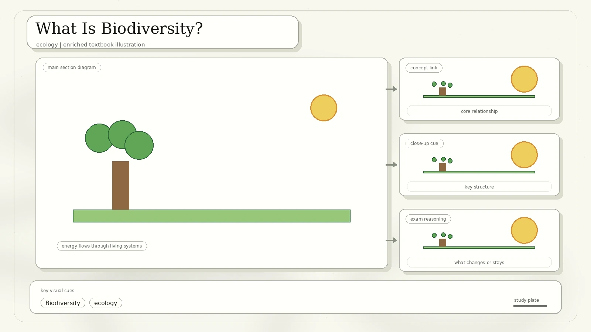
Curiosity and scientific understanding: what exists, how it works, and how it evolved.
Medicine, food, materials, farming, biomimicry, and other useful discoveries.
Diverse ecosystems often recover better from disturbance because many species share and support functions.
Source idea: Evolution is the mechanism producing the diversity of life. Evolution means changes in heritable characteristics of biological populations over successive generations, driven by natural selection and genetic mutation.
How Do We Classify Things?
Classification creates order within diversity. Work is faster and easier when things are organized into a system, and classification helps us understand similarities and differences.
Venn Diagrams
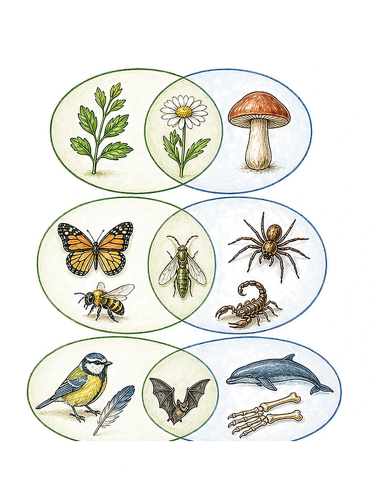
The scan uses Venn diagrams for two kinds of examples: food categories and multiples. Each circle represents one characteristic. The overlap shows items that satisfy both characteristics.
Venn diagrams are excellent for similarity and difference, but they become messy when too many characteristics are involved.
Tables Can Show More Information
| Animals | Eat plants | Eat animals | Eat plants and animals |
|---|---|---|---|
| Live on land | Cow | Tiger | Chicken |
| Live in water | Water snail | Shark | Lobsters |
| Live on land and in water | Iguana | Frog | Catfish |
Dichotomous Keys
A key is a set of questions about the characteristics of things. A dichotomous key uses paired choices, usually "yes" or "no", to identify an organism.
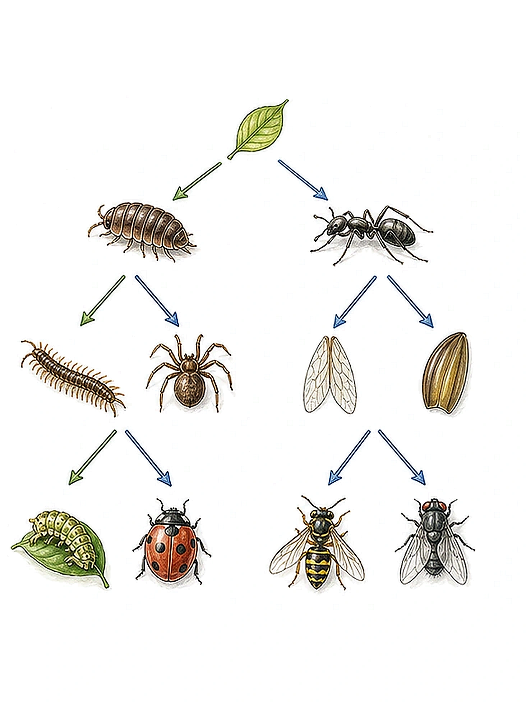
The Five Kingdoms Of Living Things
The scan uses the five-kingdom system: animals, plants, fungi, protoctists, and bacteria. It compares number of cells, cell wall, nucleus, locomotion, nutrition, and reproduction.
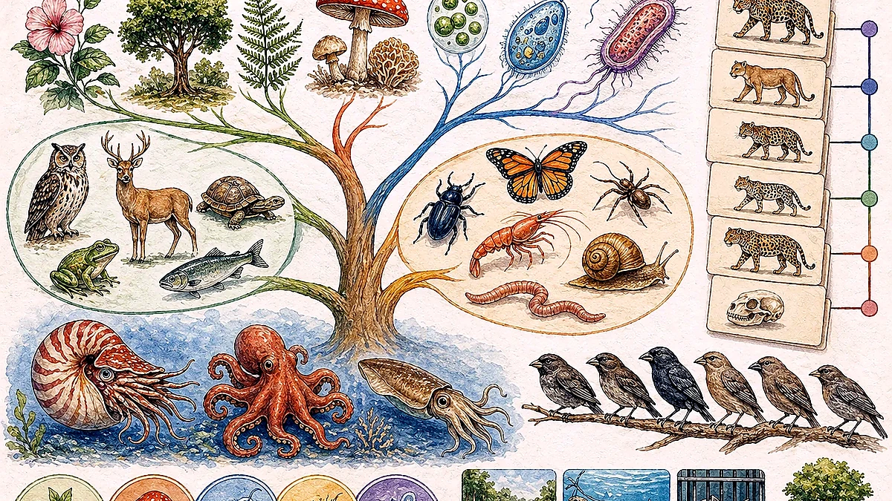
| Feature | Animals | Plants | Fungi | Protoctists | Bacteria |
|---|---|---|---|---|---|
| Example | monkey | orchid | mushroom | green algae | bacteria |
| Number of cells | multicellular | multicellular | unicellular or multicellular | unicellular or multicellular | unicellular |
| Cell wall | absent | present | present | absent or present | present |
| Nucleus | present | present | present | present | absent |
| Locomotion | able to move around | unable to move around | unable to move around | some able, some unable | some able, some unable |
| Nutrition | consumers | producers | consumers | consumers or producers | consumers or producers |
| Reproduction | lay eggs or give birth | produce seeds or spores | produce spores or divide | produce spores or divide | by division |
Added explanation: Bacteria lack a nucleus, so they are prokaryotes. Animals, plants, fungi, and protoctists have nuclei, so they are eukaryotes.
Phylogeny And The Three Domains
Phylogeny is the study of relationships among different groups of organisms and their evolutionary development. It tries to trace the evolutionary history of life and is based on the hypothesis that all living organisms share common ancestry. The scan also states that molecular phylogeny supports the three-domain system.
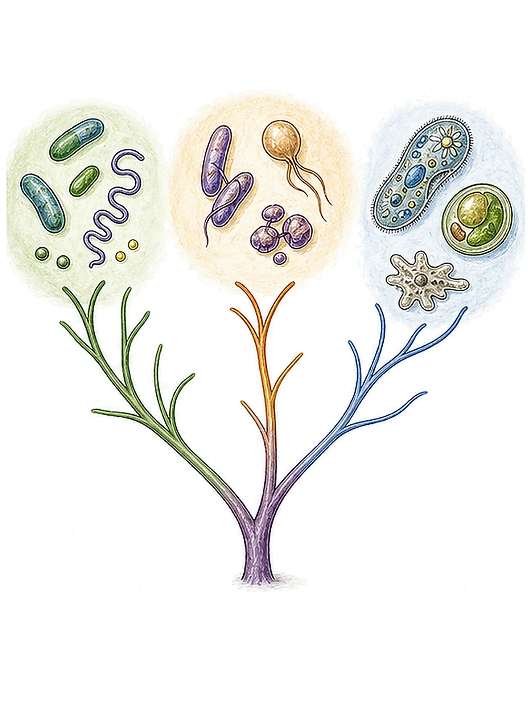
A branching diagram showing inferred evolutionary relationships.
A past population from which two or more groups descended.
Uses DNA, RNA, or protein evidence to infer relationships.
Diversity Of Animals
The animal diversity slide uses a branching tree of chordates and vertebrates. The key point is not that one modern animal "turns into" another; it is that groups share common ancestors and new traits appear along branches.
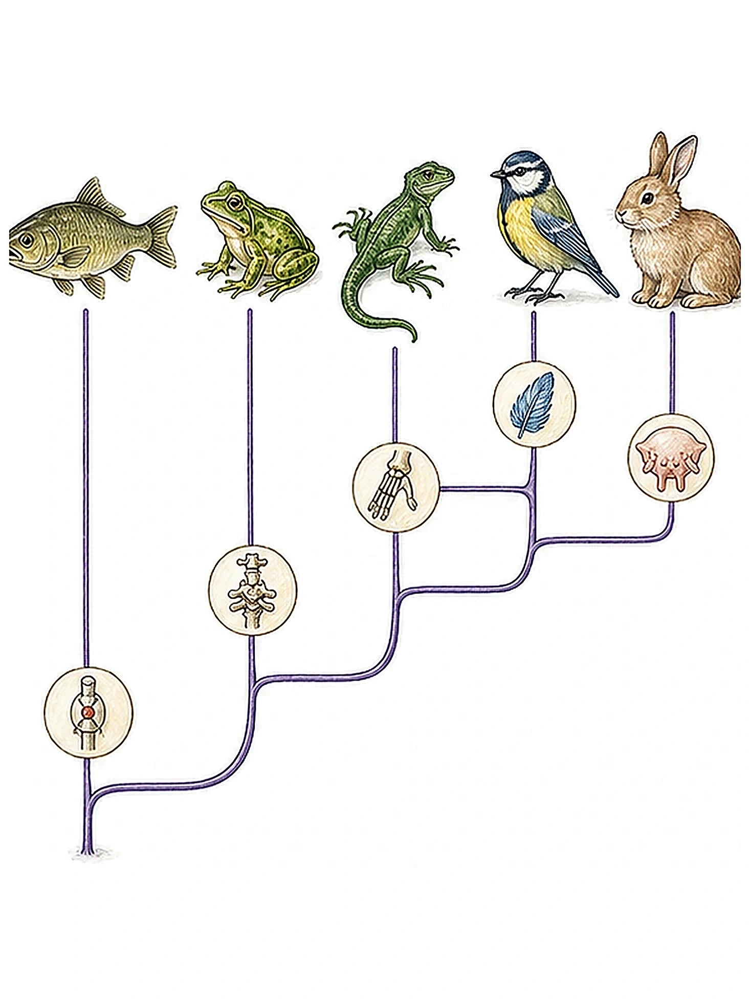
Quiz From The Scan
The scan asks which statement is correct using a major animal phylogeny.
Diversity Of Mollusks And Cephalopods
Mollusks are soft-bodied invertebrates of the phylum Mollusca, usually wholly or partly enclosed in a calcium carbonate shell secreted by a soft mantle covering the body.
Snails, slugs, conchs, periwinkles, and sea slugs.
Clams, oysters, mussels, and scallops.
Squid, octopuses, cuttlefish, and nautilus.
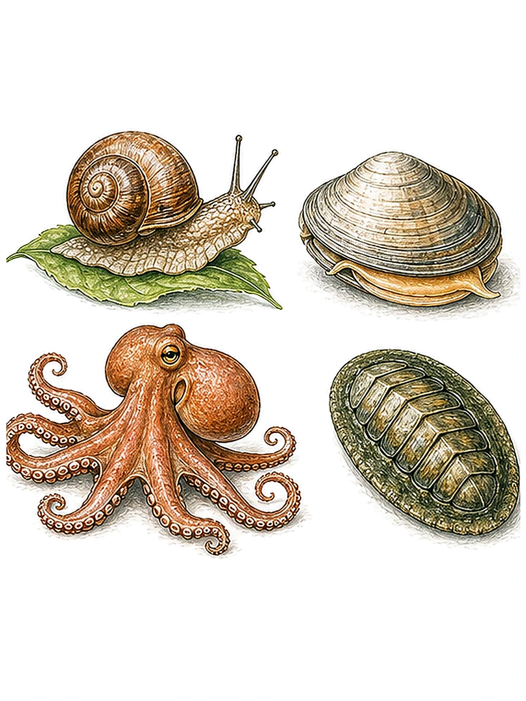
A cephalopod means "head-foot." The scan describes cephalopods as exclusively marine animals with bilateral body symmetry, a prominent head, and arms or tentacles modified from the primitive molluscan foot.
Linnaeus' System For Scientific Names
Carolus Linnaeus is presented as the founder of modern taxonomy. His binomial system gives each species a unique paired scientific name based on Latin-style naming. The system is hierarchical, universal, practical, and internationally recognized.
Rules Of The Binomial System
- The species name is always italicised or underlined.
- The genus name begins with an uppercase letter.
- The specific epithet is entirely lowercase, never all caps.
- Example from the scan: pebble crab, Xanthias lamarckii.
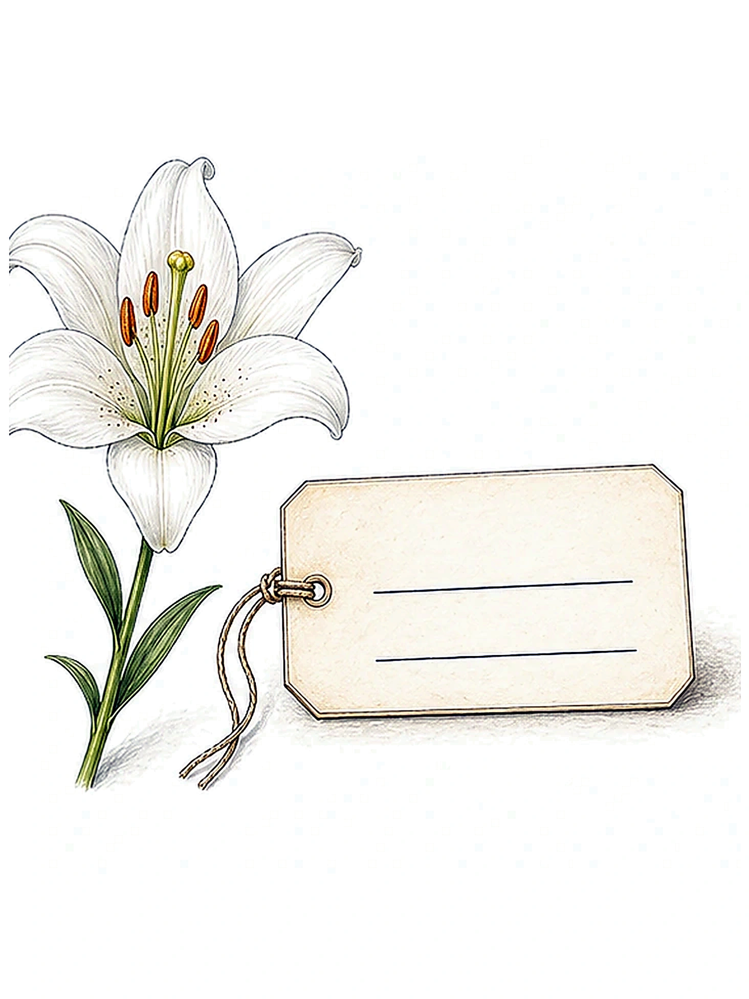
Other Types Of Names From The Scan
| System | First part | Second part | Examples |
|---|---|---|---|
| Human names | Family name | Given name | Lee Hsien Loong; Tan Benito; Weasley Ron; Weasley Ginny |
| Car names | Brand name | Model name | Porsche 911; BMW Z4; Toyota Altis; Toyota Vios |
| Scientific names | Genus | Specific epithet | Panthera leo; Panthera tigris |
Considerations When Naming Organisms
The name should not already be used for another organism.
The name should follow accepted language conventions.
A useful name may describe a feature, place, or relationship.
Names should be usable and memorable where possible.
Names can honour people, but should be respectful and appropriate.
Examples from the source: Dendrobium Joseph Schooling is an honour name. The scan gives Tianchiasaurus nedegoapeferima as a bad-name example because it was built from many actor names: Sam Neill, Laura Dern, Jeff Goldblum, Sir Richard Attenborough, Bob Peck, Martin Ferrero, Ariana Richards, and Joseph Mazzello.
Biological System Of Classification
Biologists use a natural biological classification system based on similarities and differences between organisms. The hierarchy moves from broad and general to narrow and specific.
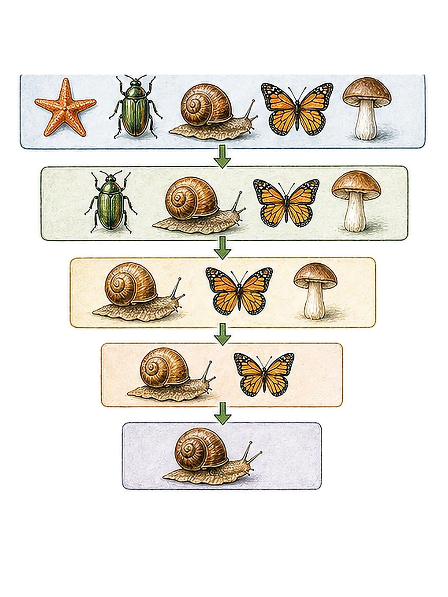
In the scan, lion and tiger share the same genus, Panthera, but have different species epithets: leo and tigris.
Same Species, Different Varieties
The scan uses vegetables and dog breeds to show that large visible differences do not always mean different species.
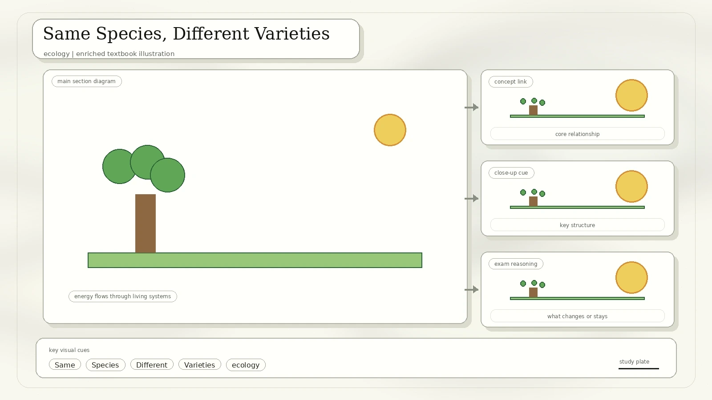
Kale, cabbage, kai-lan, cauliflower, broccoli, and Brussels sprouts are shown as varieties of one species. The scan crosses out frisee (Cichorium endivia) and lettuce (Lactuca sativa) because they are not the same species.
Golden retriever, beagle, chihuahua, husky, dalmatian, and German shepherd are shown as varieties or breeds of one domestic dog species in the source.
Added explanation: A species is often defined by reproductive compatibility and shared ancestry, not by appearance alone. Artificial selection can produce dramatic varieties within one species.
Singapore Endangered Species
The scan highlights local biodiversity using endangered species from Singapore. This connects classification to conservation: once we can identify organisms, we can monitor and protect them.
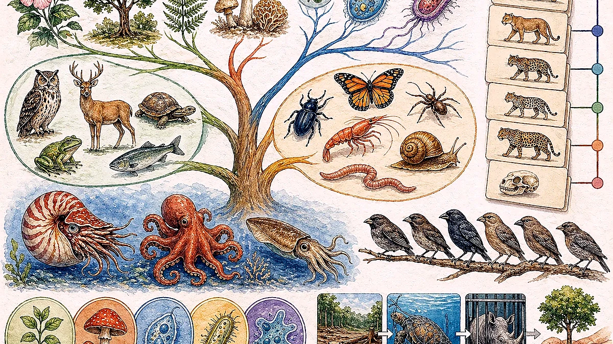
Freshwater crab endemic to Singapore.
A rare primate linked to forest habitat.
A marine reptile threatened by habitat loss and human activity.
A scaly mammal vulnerable to trafficking and habitat loss.
A charismatic aquatic mammal in Singapore waterways.
A small frog associated with forest habitats.
A distinctive marine sponge.
A butterfly example from the conservation slide.
A songbird threatened by trapping and trade.
A local plant species included in the source list.
Form And Function Of Squid
The final content slide asks students to observe squid anatomy. This is form and function biology: each structure has a job, and the whole body plan supports a fast marine predator lifestyle.
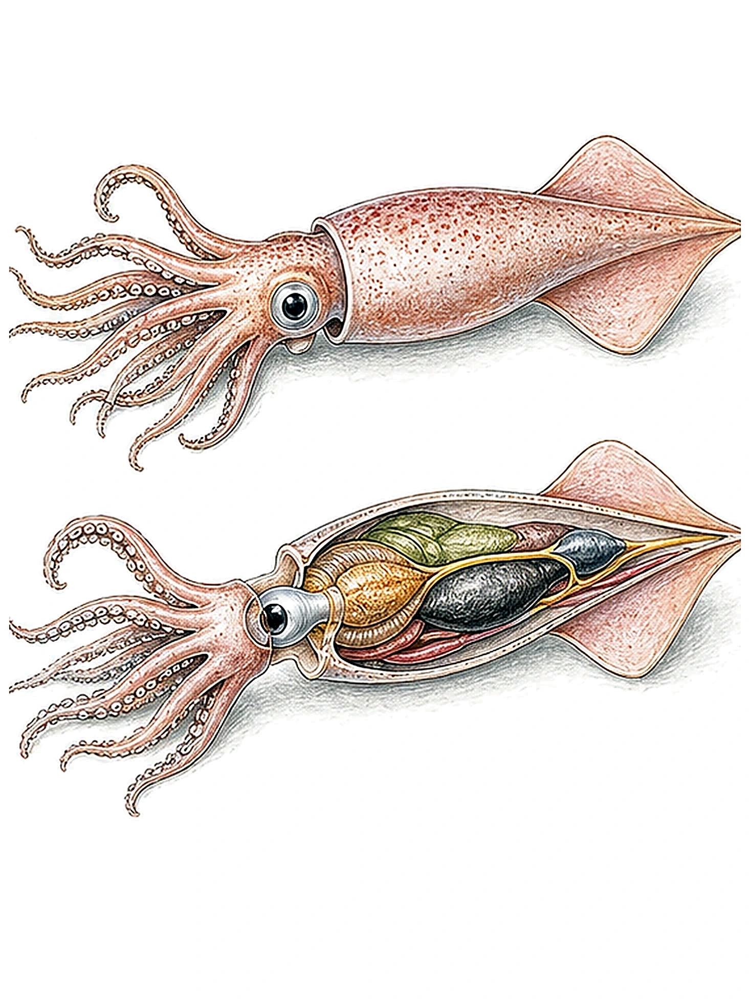
| Structure named in the scan | Function or interpretation |
|---|---|
| mantle and mantle cavity | Muscular body wall and space involved in water flow, movement, and respiration. |
| funnel | Directs water out for jet propulsion. |
| gill and gill heart | Gas exchange and pumping blood toward the gills. |
| systemic heart | Pumps oxygenated blood around the body. |
| ink sac | Releases ink for defense and escape. |
| brain, eye, stellate ganglion | Coordination, advanced vision, and rapid nerve control. |
| arms, tentacles, jaws, buccal mass, radula | Capturing, holding, and processing prey. |
| stomach, caecum, oesophagus, gonad | Digestion, nutrient processing, transport of food, and reproduction. |
Observation from the scan: dissect and look inside a baby squid.
Review And Source References
Wrap-Up Questions From The Scan
- How do we classify living organisms?
- Describe the binomial system.
- What are the three domains and five kingdoms of living organisms?
High-Yield Answers
Video Links Printed In The Scan
- What is Biodiversity?: printed as a YouTube reference in the source scan.
- Phylogeny / Evolutionary Relationship: printed as a YouTube reference in the source scan.
- Human Evolution from Bacteria to Fish to You!: printed as a YouTube reference in the source scan.
Rebuilt from the Week 04 scanned PDF, IMG_20260427_0004.pdf. The diagrams are newly drawn in HTML/SVG to make the original biodiversity, classification, and taxonomy ideas easier to revise.